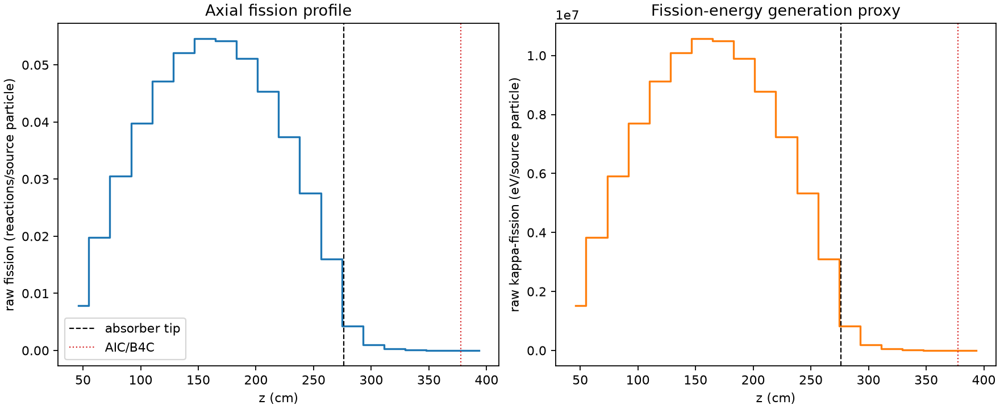
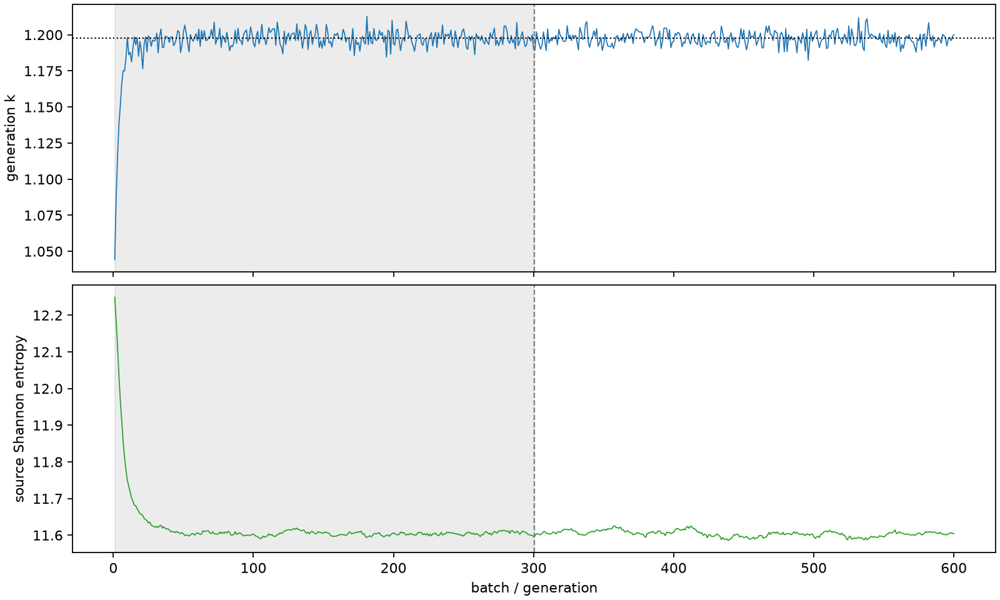

| field | value |
|---|---|
| experiment | V2-STAGE_256_OGRENCI_01-0031 |
| k | 1.1975806349565523 |
| MC standard error | 0.0001915576034314345 |
| seconds | 958.6748413390014 |
| acceptance | not_assessed |
| convergence | review_required |
Completed is output integrity only; physical and statistical review required. Zero tallies do not prove zero production or zero uncertainty.
| diagnostic | value |
|---|---|
| geometric fuel voxels | 5280 |
| zero fission tally voxels | 7 |
| low signal fuel voxels | 888 |
| low signal fission share | 0.0001024443726560847 |
| low signal kappa share | 0.00010247733623599887 |
| important fission share | 0.950111555885352 |
| previous filter included | 4392 |
| duration estimate s | 1562.5173488400023 |
| actual minus estimate s | -603.8425075010009 |
| fission relative MC error | statistics |
|---|---|
| all_geometric_fuel | {"voxels": 5280, "positive_mean_voxels": 5273, "zero_mean_voxels": 7, "undefined_relative_error_voxels": 7, "median": 0.011291946608913576, "p95": 0.6453545749954018, "maximum": 1.0000000000000002} |
| low_signal | {"voxels": 888, "positive_mean_voxels": 881, "zero_mean_voxels": 7, "undefined_relative_error_voxels": 7, "median": 0.48674685267095896, "p95": 0.9732267157925569, "maximum": 1.0000000000000002} |
| important_95pct | {"voxels": 2985, "positive_mean_voxels": 2985, "zero_mean_voxels": 0, "undefined_relative_error_voxels": 0, "median": 0.008318658885575918, "p95": 0.012579590040596606, "maximum": 0.015466174682308216} |
| outside_previous_filter | {"voxels": 888, "positive_mean_voxels": 881, "zero_mean_voxels": 7, "undefined_relative_error_voxels": 7, "median": 0.48674685267095896, "p95": 0.9732267157925569, "maximum": 1.0000000000000002} |
| kappa_fission relative MC error | statistics |
|---|---|
| all_geometric_fuel | {"voxels": 5280, "positive_mean_voxels": 5273, "zero_mean_voxels": 7, "undefined_relative_error_voxels": 7, "median": 0.011279084045730357, "p95": 0.6449458027286816, "maximum": 1.0000000000000002} |
| low_signal | {"voxels": 888, "positive_mean_voxels": 881, "zero_mean_voxels": 7, "undefined_relative_error_voxels": 7, "median": 0.4857514030160393, "p95": 0.9731613597091732, "maximum": 1.0000000000000002} |
| important_95pct | {"voxels": 2985, "positive_mean_voxels": 2985, "zero_mean_voxels": 0, "undefined_relative_error_voxels": 0, "median": 0.008309240650964693, "p95": 0.012565441509178682, "maximum": 0.015448580604781477} |
| outside_previous_filter | {"voxels": 888, "positive_mean_voxels": 881, "zero_mean_voxels": 7, "undefined_relative_error_voxels": 7, "median": 0.4857514030160393, "p95": 0.9731613597091732, "maximum": 1.0000000000000002} |
| axial bin | fission share | kappa-fission share |
|---|---|---|
| 1 | 0.016115195140310568 | 0.016115896907123863 |
| 2 | 0.040548850933083566 | 0.04054874947576981 |
| 3 | 0.06234126594935144 | 0.06234091270394851 |
| 4 | 0.08134666248095804 | 0.08134636436273601 |
| 5 | 0.09638744639883681 | 0.09638712217512845 |
| 6 | 0.10657843073804248 | 0.10657807365723457 |
| 7 | 0.11158365180467146 | 0.11158327812595795 |
| 8 | 0.11091705361985614 | 0.1109165468703796 |
| 9 | 0.10450293388610579 | 0.10450214804927577 |
| 10 | 0.09275983818995438 | 0.09275948017861228 |
| 11 | 0.07651263271818909 | 0.07651237673213798 |
| 12 | 0.05625966449172602 | 0.05625955222643498 |
| 13 | 0.03272221578864728 | 0.03272222936251606 |
| 14 | 0.008684019648819532 | 0.008686210001337137 |
| 15 | 0.0020381965535445274 | 0.0020388769657758276 |
| 16 | 0.0005151039873843205 | 0.0005152784938962739 |
| 17 | 0.00013480116736589497 | 0.0001348498010455205 |
| 18 | 3.8229494524656145e-05 | 3.824234057451971e-05 |
| 19 | 1.1655837707638005e-05 | 1.1658547779138053e-05 |
| 20 | 2.1511709203211036e-06 | 2.153022335868802e-06 |
Histories include the inactive-to-active transition at batch 300. kappa-fission approximates fission energy production, not total heat deposition.

